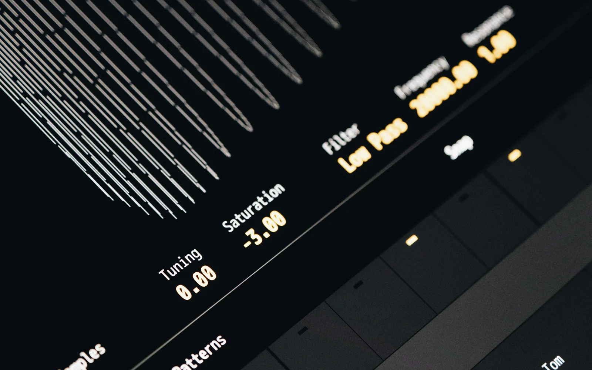

5 Ways AI Assistants Are Transforming Operations
From handling support queries to managing schedules, see how AI assistants are streamlining internal workflows across industries.

Always-On Execution
AI assistants don’t take breaks. They run 24/7, handling routine tasks like sending reports, updating dashboards, managing calendars, or even replying to common emails. This always-on layer of execution ensures things happen on time—even when your team is offline.
Faster Decision-Making
AI tools can synthesize large volumes of data into usable insights in seconds. Whether you're evaluating campaign performance or monitoring support trends, assistants powered by GPT or Claude can instantly surface the “what,” “why,” and “what next”—so you can act, not analyze.
Automated Coordination
From project reminders to cross-tool updates, AI assistants can act as silent project managers. They send nudges, update cards in ClickUp or Asana, write meeting summaries, and ensure nothing falls through the cracks. Coordination becomes a system—not a skillset you rely on.
Contextual Communication
AI agents now understand the full context behind a customer, a ticket, or a deadline. This enables them to write emails, respond to internal queries, or even handle support issues with clarity and tone. Operations becomes proactive, not just reactive.
Scaling Without Hiring
Every growing business hits the same wall—more work, limited people. With AI assistants, teams can multiply their output without multiplying the headcount. AI handles operational clutter so your people focus on creative, strategic, and human work.